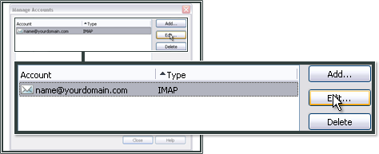

Opera Mail¶
Fare clic sulla scheda Menu in Opera, quindi selezionare Mail and Chat Accounts... (Account di posta e di chat...)

Fare clic su Yes

Selezionare Email e fare clic su Next (Avanti)

Immettere il nome che si desidera far visualizzare ai destinatari delle e-mail. Immettere l’indirizzo e-mail, in questo esempio name@example.com, dove example.com è il dominio ospitato presso EWake. Quindi, fare clic su Next (Avanti).

Immettere l’indirizzo e-mail completo come Login name e la password creati nel Pannello di controllo.
Selezionare la casella relativa a IMAP.
Quindi, fare clic su Next (Avanti)

Immettere imap.ewake.it come Incoming server (Server di posta in arrivo) e seleziona Use secure connection (TLS).
Per il Outgoing server (Server di posta in uscita) digitare smtp.ewake.it e seleziona Use secure connection (TLS).
Quindi, fare clic su Finish (Fine).
L’operazione ora è quasi completata. Fare click sulla scheda Menu in Opera, quindi selezionare Mail and Chat Accounts... (Account di posta e chat...)
Selezionare l’account che si sta configurando e fare clic su Edit... (Modifica...)
Fare clic sulla scheda Server

Come Incoming IMAP server (Posta in entrata), inserisci 993. Per il Outgoing SMTP server (Server di posta in uscita SMTP) il numero di porta deve essere 465. L’autenticazione deve essere impostata su AUTH LOGIN.
Fare clic su OK, quindi su Close per terminare.